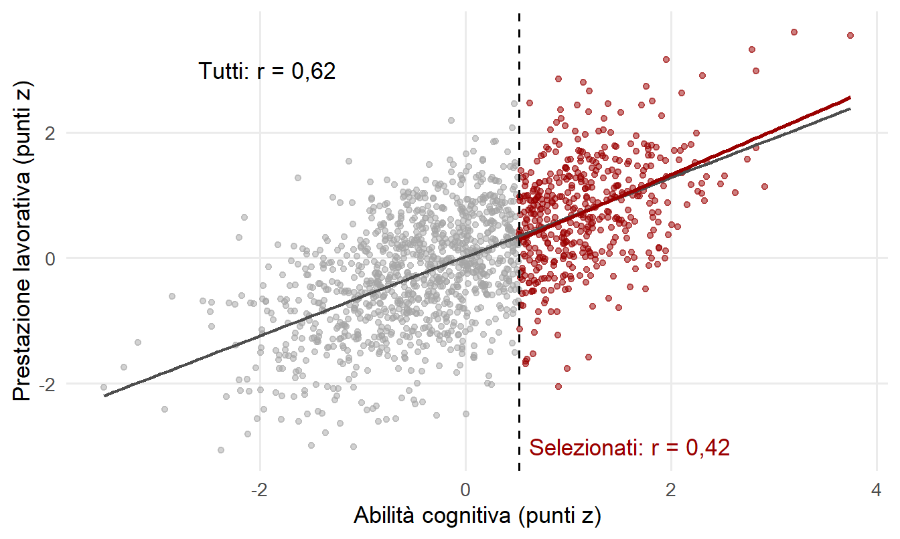

17 Intelligenza e lavoro
Il capitolo su scuola e condizioni sociali ha mostrato che l’intelligenza prevede la posizione lavorativa e il reddito, soprattutto attraverso l’istruzione. Questo capitolo cambia prospettiva. Mettiamoci dal lato di chi deve assumere: un QI più alto è una caratteristica da cercare? E se sì, quanto conta rispetto ad altre?
Nella selezione del personale i test di intelligenza raramente si chiamano così. Prove di «problem solving», di «attitudine» o di «conoscenze generali» sono spesso prove di intelligenza fluida o cristallizzata con un altro nome. Anche il titolo di studio richiesto in un annuncio funziona in parte come filtro cognitivo indiretto, che evita di misurare il QI esplicitamente (Warne, 2020). Le batterie complete, invece, sono poco pratiche e in alcuni paesi pongono problemi legali.
Perché usarle? Perché sono economiche: rapide da somministrare, facili da correggere, standardizzate. Perché colgono la capacità di imparare compiti nuovi, più che ciò che si sa già fare. E perché offrono un criterio basato su dati. A condizione, naturalmente, che chi le usa sappia valutarne validità, attendibilità e adeguatezza al contesto.
17.1 Un caso estremo: l’esercito statunitense
L’esercito degli Stati Uniti è un’organizzazione con più di un milione di persone e centinaia di specializzazioni: analisti, informatici, meccanici, autisti, cuochi, medici, interpreti, contabili. La grande maggioranza non ha un ruolo direttamente legato al combattimento, e molti ruoli richiedono di imparare procedure tecniche complesse. Per questo, oltre ai filtri medici e legali, le reclute vengono valutate con una batteria di attitudini, da cui si ricava un punteggio di qualificazione con soglie minime fissate dal Dipartimento della Difesa.
Fra il 1966 e il 1971, durante la guerra del Vietnam, il segretario alla Difesa Robert McNamara abbassò quelle soglie con un programma chiamato «Project 100,000». Circa 354.000 uomini che in precedenza sarebbero stati esclusi, molti con punteggi corrispondenti a un QI inferiore a 92 e in parte fino a circa 70, furono arruolati. La motivazione ufficiale era offrire disciplina, formazione e opportunità di integrazione a giovani di contesti svantaggiati (Warne, 2020).
Il programma fu un fallimento. Le nuove reclute dovevano ripetere l’addestramento molto più spesso, venivano congedate con maggiore frequenza e, secondo le ricostruzioni disponibili, morivano in combattimento a un tasso sensibilmente più alto. Anche dopo il ritorno alla vita civile, i loro esiti in termini di occupazione, reddito e stabilità familiare risultavano peggiori di quelli di coetanei con capacità simili che non avevano prestato servizio (Gregory, 2015). L’errore non stava nella mancanza di risorse per l’addestramento, ma nell’idea che chiunque possa essere formato per qualunque compito con sufficiente impegno. Il caso è diventato un esempio di come ignorare le differenze cognitive possa danneggiare proprio le persone che si vorrebbe aiutare.
17.2 Le stime classiche
Nella vita civile, il riferimento per decenni sono state le meta-analisi di Frank Schmidt e John Hunter. Secondo le loro stime, l’abilità mentale generale correlava circa 0,6 con il successo nella formazione professionale e circa 0,5 con la prestazione lavorativa: il miglior singolo predittore conosciuto (Schmidt & Hunter, 2004; Schmidt & Hunter, 1998).
Quei valori però non erano correlazioni osservate. Le correlazioni grezze erano spesso meno della metà. Erano state corrette per due fattori.
Il primo è l’attendibilità. Se il QI o la valutazione della prestazione contengono errore di misura, la correlazione osservata è più bassa di quella fra le grandezze vere. Conoscendo l’attendibilità delle misure si può stimare la correlazione «disattenuata».
Il secondo è la restrizione del range. Le correlazioni vengono calcolate su persone già assunte, cioè già selezionate, anche in base alle loro capacità. In un gruppo omogeneo la correlazione si riduce, come mostra la Figura 17.1.
In linea di principio, entrambe le correzioni sono legittime. Il problema è come sono state applicate. Revisioni recenti hanno mostrato che la correzione per restrizione del range era spesso basata su assunzioni arbitrarie e veniva applicata anche quando la selezione era stata modesta, con un effetto sistematico di sovrastima. Rifacendo i calcoli con correzioni più prudenti, la validità dei test cognitivi per prevedere la prestazione lavorativa scende attorno a 0,3 (Sackett et al., 2022). Resta un predittore utile, ma non più nettamente superiore a tutti gli altri.
La revisione non ha chiuso la questione. Altri specialisti della selezione sostengono che rinunciare alla correzione porti all’errore opposto, cioè a sottostimare sistematicamente la validità (Oh et al., 2023). Il punto di consenso è più modesto, ma solido: l’abilità cognitiva prevede la prestazione lavorativa, con una validità almeno moderata, e lo 0,5 delle sintesi classiche va trattato come un limite superiore piuttosto che come un dato acquisito.
17.3 Dipende dal compito, e dal criterio
Le stime variano molto con il tipo di lavoro e con ciò che si vuole prevedere.
La complessità del lavoro. L’intelligenza prevede la prestazione in modo più forte nei lavori complessi, che richiedono di analizzare informazioni, decidere e coordinare, e in modo più debole in quelli semplici e ripetitivi. Durante la formazione, invece, la sua capacità predittiva è elevata quasi per qualsiasi lavoro: imparare un compito nuovo richiede sempre capacità cognitive (Schmidt & Hunter, 2004).
Il criterio di prestazione. La correlazione è più alta con il rendimento nella formazione e con misure oggettive della prestazione nei compiti centrali del ruolo. È più bassa con i giudizi complessivi dei superiori, che dipendono anche da relazioni e impressioni. È debole, ma presente, con comportamenti di collaborazione spontanea e, in senso negativo, con assenteismo e comportamenti scorretti.
La stratificazione fra professioni. Le professioni differiscono molto nel QI medio di chi le svolge. Uno studio recente su centinaia di professioni ha trovato una differenza superiore a una deviazione standard e mezza fra gli estremi, ma ha mostrato anche che le professioni si differenziano, in misura minore, per tratti di personalità e interessi (Wolfram, 2023). Le gerarchie occupazionali non sono costruite solo sull’intelligenza.
17.4 Oltre g
Il quadro che emerge dalle ricerche più recenti è meno centrato sul solo fattore generale.
Le abilità cognitive specifiche possono aggiungere informazione. Una meta-analisi ha trovato che conoscenze generali, velocità di elaborazione, abilità quantitative e abilità visive prevedono la prestazione in misura paragonabile o talvolta superiore al ragionamento fluido e all’abilità generale, specialmente quando corrispondono alle richieste della mansione (Nye et al., 2022). È un risultato in parziale tensione con la prevalenza di g vista nei capitoli sui modelli, e la discussione è aperta. Nel lavoro, a differenza che in un test, conta anche ciò che si è già imparato.
La personalità aggiunge un contributo indipendente. La coscienziosità, cioè l’affidabilità, l’organizzazione e la perseveranza, è un predittore della prestazione in quasi tutti i tipi di lavoro (Barrick & Mount, 1991; Wilmot & Ones, 2019). La stabilità emotiva conta soprattutto nel lavoro di gruppo; estroversione e amicalità nei ruoli a contatto con il pubblico o di guida. Onestà e umiltà sono utili soprattutto per prevedere, in negativo, comportamenti scorretti.
Molto popolari sono oggi le cosiddette soft skills: pensiero analitico, flessibilità, adattabilità, creatività, curiosità, capacità di apprendere. Il problema è che questa etichetta raccoglie costrutti che si sovrappongono in gran parte a intelligenza e personalità, con la differenza di essere presentati come intrinsecamente allenabili. Sono un esempio del rischio discusso negli approfondimenti finali: dare nomi nuovi a costrutti già noti.
17.5 Una valutazione equilibrata
L’intelligenza è un buon predittore della capacità di imparare un lavoro e di svolgerlo, soprattutto quando il lavoro è complesso. Le stime classiche erano probabilmente gonfiate da correzioni troppo generose, e oggi la si considera un predittore importante fra altri, non l’unico che conta. Per chi seleziona, la conclusione pratica è combinare misure: abilità generale, abilità specifiche rilevanti per la mansione, tratti di personalità. Per chi viene selezionato, la conclusione è un’altra: un test cognitivo può dire qualcosa di vero su quanto facilmente si impara, ma dice poco su quanto si sarà affidabili, collaborativi o motivati.